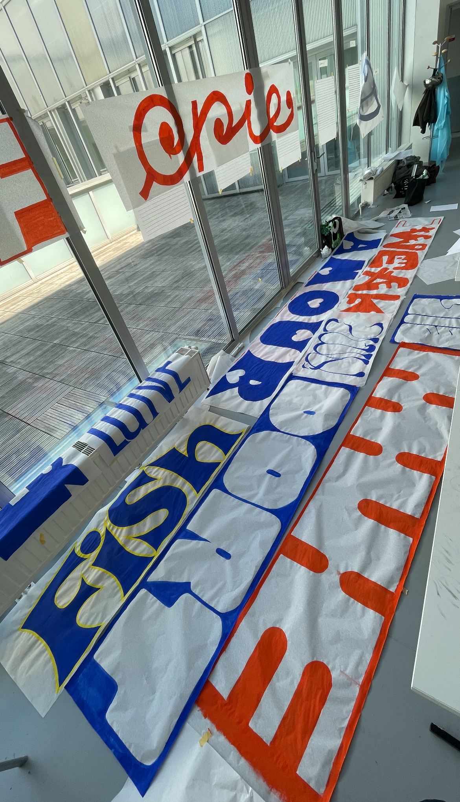
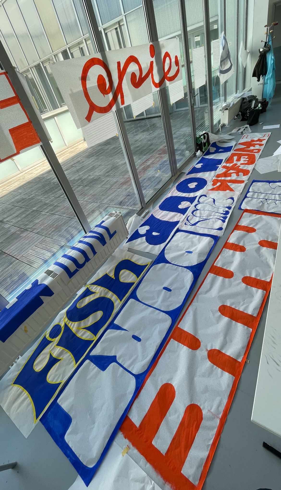
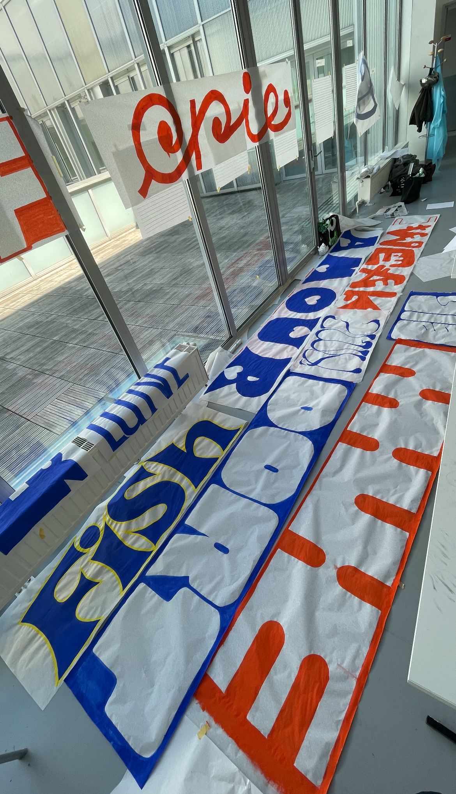

Comment insuffler de l’émotion dans la lettre ? C’est autour de cette question que s’est construit mon travail durant le workshop de lettering. À travers les mots âme, dort et perlé, j’ai exploré le potentiel expressif de la typographie. Chaque mot a guidé une recherche formelle : des courbes douces pour évoquer le sommeil, des textures délicates pour faire vibrer l’âme, des détails lumineux comme autant de perles visuelles. Entre intuition et précision, le dessin de la lettre devient langage sensible, révélant l’invisible à travers le visible.
How can we infuse emotion into a letterform? This question guided my approach during the lettering workshop. Through the words soul, sleeps, and pearly, I explored the expressive potential of typography. Each word inspired a visual exploration: soft curves to suggest rest, delicate textures to evoke the soul, luminous details like visual pearls. Balancing intuition and precision, the letter becomes a sensitive language—revealing the invisible through the visible.
Avril 2025 -
